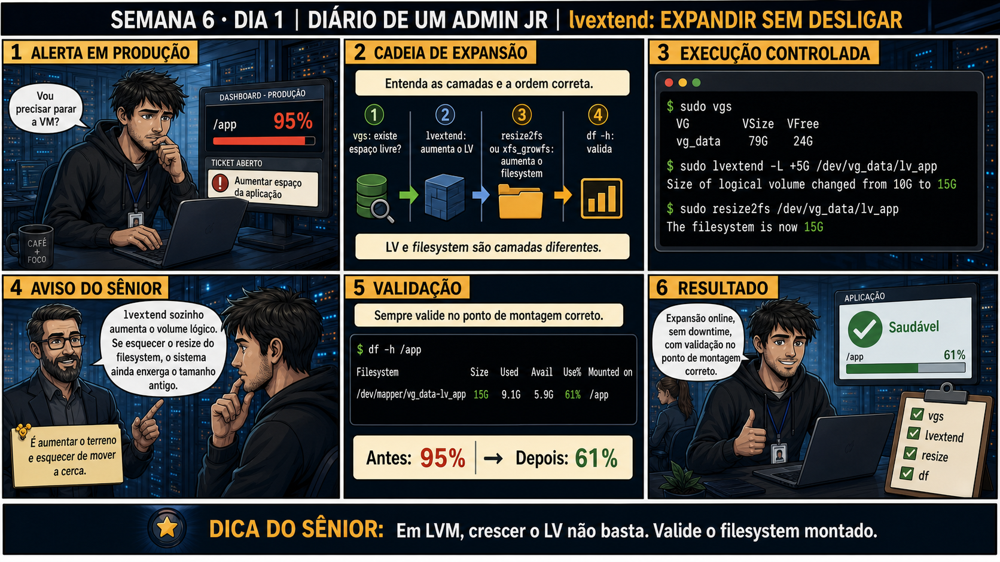

DIARIO DE UM ADMIN JR. | FASE 1 — LINUX, DO BÁSICO AO AVANÇADO
🔗 Conecta com ontem: você entendeu a cadeia PV → VG → LV, sem tocar em nada.
Hoje é a primeira vez que você expande um disco de verdade, provando na prática a promessa de "sem downtime"
que abriu a Semana 5.
🔓 Privilégio de hoje: expandir um Logical Volume em produção, sem desligar
nada. Você ganha autorização pra usar lvextend + resize2fs/xfs_growfs — sempre os dois juntos, nunca só um.
Semana 6 · Dia 1 | Nível Júnior
lvextend: Expandindo um Disco Sem Desligar Nada
em LVM, crescer o LV não basta — valide o filesystem montado
ANTES DE ALTERAR, OBSERVE. DEPOIS DE ALTERAR, VALIDE.

1. O chamado
O dashboard mostra /app em 95% de uso, alerta em produção. Seu primeiro
pensamento é perguntar se precisa parar a VM — mas essa é exatamente a pergunta que o LVM existe pra tornar
desnecessária.
💡 Passa o mouse nas palavras destacadas pra ver uma dica rápida — clica se quiser a explicação completa com analogia.
2. O sênior te conta
Segunda-feira, abrindo a Semana 6
Ontem você fechou a Semana 5 mapeando a cadeia PV → VG → LV sem tocar em nada — só olhar, entender,
documentar. Hoje o alerta chega de verdade: /app em 95%, em produção, e o instinto de todo
júnior de primeira viagem é perguntar "posso parar a VM pra resolver isso com calma?". Essa pergunta é
exatamente a que o LVM existe pra tornar desnecessária.
Eu lembro bem da minha primeira expansão real. Rodei lvextend -L +5G, vi a mensagem de
sucesso — "Size of logical volume changed from 10G to 15G" — e fechei o terminal, satisfeito. Cinco
minutos depois o alerta disparou de novo: /app continuava em 95%. Fiquei olhando pra tela sem
entender: o comando funcionou, a mensagem confirmou, então por que o disco continuava cheio? Um sênior
mais experiente me mostrou o que eu tinha esquecido: lvextend mexe só no Logical Volume — o
"terreno" cresceu, mas o sistema de arquivo (a "casa" construída em cima) continuava vendo o tamanho
antigo, porque ninguém tinha avisado ele que o terreno aumentou.
É uma armadilha clássica porque a mensagem de sucesso do lvextend não mente — ela só conta
metade da história. Faltava rodar resize2fs (pra ext4) ou xfs_growfs (pra xfs)
em cima do mesmo caminho, pra fazer o filesystem reconhecer o espaço novo. Duas camadas, dois comandos,
sempre os dois juntos.
É esse exato erro que você vai reproduzir de propósito no laboratório de hoje — rodar só o
lvextend, ver o df -h continuar mostrando o tamanho antigo, e só então completar
com o resize do filesystem. Sentir a armadilha na pele é o que faz ela nunca mais te pegar em produção.
3. Decodificador de conceitos
Clica em qualquer termo pra ver a definição completa e uma analogia do dia a dia:
4. Ferramentas e leitura da evidência
Comando
O que observar e por que importa
sudo vgs
Confirma espaço livre disponível no Volume Group antes de expandir.
sudo lvextend -L +5G /dev/vg_data/lv_app
Cresce o Logical Volume, consumindo o espaço livre do VG.
sudo resize2fs /dev/vg_data/lv_app
Expande o sistema de arquivo pra ocupar todo o novo espaço do LV.
$ sudo vgs
VG VSize VFree
vg_data 79G 24G
$ sudo lvextend -L +5G /dev/vg_data/lv_app
Size of logical volume changed from 10G to 15G
$ sudo resize2fs /dev/vg_data/lv_app
The filesystem is now 15G
$ df -h /app
/dev/mapper/vg_data-lv_app 15G 9.1G 5.9G 61% /app
5. Laboratório guiado — pegue na mão, comando por comando
Segurança: execute os testes apenas em VM descartável e confirme nomes de discos, hosts e arquivos antes de cada comando.
Ação: confirme espaço livre no VG antes de expandir qualquer coisa.
$ sudo vgs
Resultado esperado: VFree confirmado (ex.: 24G), disponível pra teste de expansão.
Por que fizemos isso: lvextend não cria espaço do nada — ele consome o VFree do VG. Sem confirmar que existe espaço livre suficiente, o comando falha ou expande menos do que você esperava.
Cilada comum: assumir que "tem espaço" sem checar — em produção, VGs próximos do limite são comuns, e o comando pode simplesmente não ter margem pra dar.
Ação: identifique o tipo de filesystem do LV de teste — ext4 usa resize2fs, xfs usa xfs_growfs.
$ df -T /app
Resultado esperado: tipo confirmado (ext4 ou xfs), determinando qual comando de resize usar no passo seguinte.
Por que fizemos isso: resize2fs e xfs_growfs não são intercambiáveis — cada tipo de filesystem tem sua própria ferramenta, e usar a errada simplesmente falha.
Cilada comum: assumir que todo servidor Linux usa ext4 por padrão — muitas distros modernas (RHEL/CentOS, por exemplo) usam xfs de fábrica.
Ação: rode lvextend no LV de teste e confirme a mudança — mas pare aí, sem rodar o resize ainda, e reproduza o erro clássico.
Resultado esperado: lvs mostra o LV maior, mas df -h ainda mostra o tamanho antigo — a armadilha reproduzida de propósito.
Por que fizemos isso: ver esse descompasso com os próprios olhos é o que fixa a lição — lvextend e o resize do filesystem são duas camadas separadas, sempre.
Cilada comum: ver a mensagem de sucesso do lvextend e achar que já terminou — ela confirma só a metade do trabalho.
🧑🏫 Aqui entra o Mentor (em breve): se resize2fs ou xfs_growfs retornar um erro inesperado, este é o ponto onde o chat com o Sênior-IA vai ajudar a diagnosticar.
Ação: complete a expansão rodando o resize correto pro tipo de filesystem identificado, e confirme com df -h.
$ sudo resize2fs /dev/vg_data/lv_app
# ou, se for xfs:
$ sudo xfs_growfs /app
$ df -h /app
Resultado esperado: df -h agora mostra o tamanho novo — expansão completa e validada, o descompasso do passo anterior resolvido.
Por que fizemos isso: só depois desse segundo comando o espaço fica realmente disponível pro sistema — é o passo que a maioria dos júniors esquece na pressa.
Cilada comum: rodar resize2fs num filesystem xfs (ou vice-versa) — o comando falha na hora, confirme sempre o tipo antes.
# anote no seu diário de bordo:
LV: lv_app | antes: 10G | depois: 15G
Comandos: lvextend -L +5G + resize2fs
Validado com: df -h /app -> 15G
Resultado esperado: registro completo reproduzindo o painel 6 da prancha de hoje.
Por que fizemos isso: um registro escrito da sequência completa (as duas camadas, os dois comandos) é o que evita repetir o mesmo esquecimento da próxima vez, sob pressão.
Cilada comum: documentar só o comando de lvextend, esquecendo de registrar o resize — a documentação incompleta reproduz exatamente o erro que você acabou de aprender a evitar.
6. Antes de ver as opções — tenta responder
🧠 Recall ativo: por que lvextend sozinho não é suficiente pra resolver um disco
cheio?
lvextend
só aumenta o LV por dentro — o
sistema de arquivo
montado nele ainda não sabe do novo espaço até você rodar
resize2fs (ext4) ou
xfs_growfs (xfs) — sem esse segundo passo, o espaço existe mas ninguém enxerga.
QUESTÃO 1 de 3
7. Questão comentada — clica numa alternativa
/app está em 95% de uso, num Logical Volume com espaço livre disponível no VG.
Qual é a sequência correta pra resolver, sem downtime?
💡 Analogia do Sênior para Fixar: O comando 'lvextend -L +10G' aumenta o tamanho do contêiner de metal; o 'resize2fs' ou 'xfs_growfs' estica o tecido do sistema de arquivos para preencher o novo espaço.
QUESTÃO 2 de 3 — cenário de erro real
7.1 lvextend rodou sem erro, mas df -h /app ainda mostra o tamanho antigo — o que aconteceu?
Um colega rodou lvextend -L +5G com sucesso, viu a confirmação "Size of logical volume
changed from 10G to 15G", mas esqueceu o passo seguinte.
Por que df -h ainda mostra o tamanho antigo do filesystem?
💡 Analogia do Sênior para Fixar: A flag '-r' (resizefs) no lvextend é o 'dois em um' inteligente: expande o volume lógico e o sistema de arquivos no mesmo comando, sem risco de esquecer a segunda etapa.
QUESTÃO 3 de 3 — detalhe que confunde todo iniciante
7.2 "resize2fs funciona pra qualquer sistema de arquivo, certo?"
Um colega tenta rodar resize2fs num Logical Volume formatado como xfs, e o
comando falha.
Por que resize2fs não funciona nesse caso?
💡 Analogia do Sênior para Fixar: Expandir volumes XFS online é como esticar um elástico: o XFS só cresce enquanto está montado e ativo, mas nunca pode ser reduzido sem recriação.
8. Procedimento profissional
Confirme espaço livre no VG com vgs antes de expandir.
Identifique o tipo de filesystem (ext4 ou xfs) do LV alvo.
Execute lvextend pra crescer o volume lógico.
Execute resize2fs ou xfs_growfs, conforme o tipo, pra expandir o filesystem.
Valide com df -h no ponto de montagem correto.
Prevenção
Transforme essa sequência de dois comandos num script ou alias padrão da equipe (ex.:
expand-lv.sh <caminho> <tamanho> que roda lvextend + resize2fs/xfs_growfs +
df -h automaticamente). Isso remove a possibilidade de esquecer o segundo passo, mesmo sob pressão de um
alerta em produção.
9. Validação e encerramento
Espaço livre no VG foi confirmado antes de expandir.
lvextend e resize2fs/xfs_growfs foram executados, nunca só um dos dois.
O tipo correto de filesystem foi identificado antes de escolher a ferramenta.
df -h confirmou o novo tamanho no ponto de montagem correto.
Rollback e limites
Reduzir um Logical Volume (o oposto de hoje) é uma operação muito mais arriscada,
que pode causar perda de dados se feita na ordem errada — hoje só cobrimos expansão, que é segura quando
feita na sequência correta.
💡 Sobre repetição espaçada: "duas etapas, não uma" conecta com backup+restore
que vem mais adiante nesta semana — sempre desconfie de uma solução que parece completa com um único comando.
O Anki vai conectar os dois.
10. Resposta final
Alternativa correta: B. Nesta aula, a decisão correta foi
sudo lvextend -L +5G, seguido de sudo resize2fs (ou xfs_growfs). O ponto central do caso é este: em
LVM, crescer o LV não basta — valide o filesystem montado.
🔓 O que você desbloqueou hoje
Capacidade de expandir storage em produção sem downtime, provado na prática.
Amanhã você aprende a criar um Logical Volume completamente novo, do zero, fechando o ciclo até o fstab.